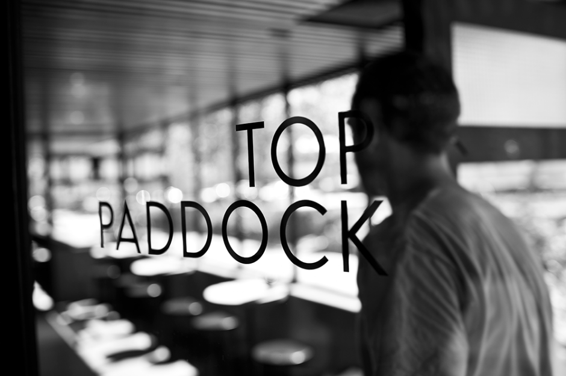
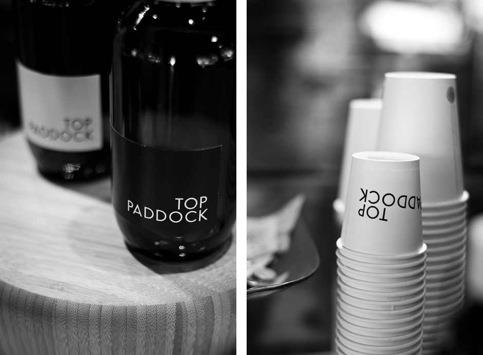
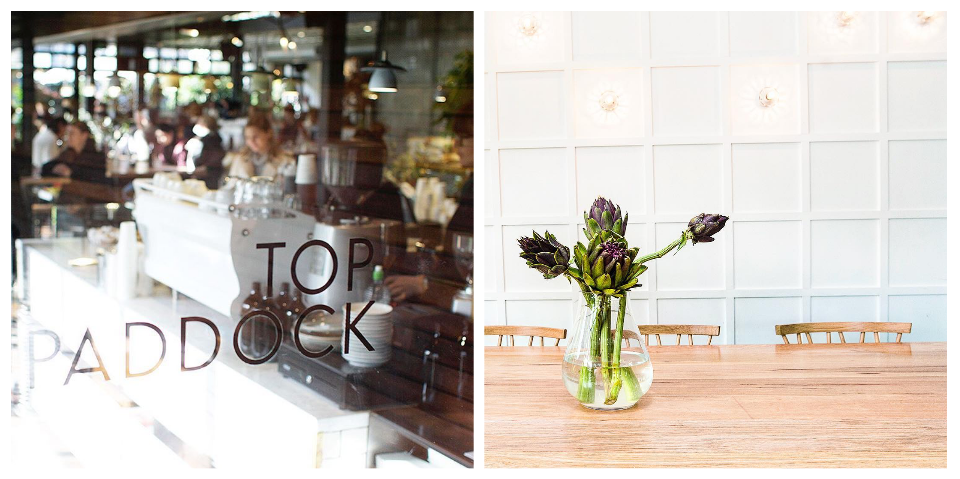

Identity
Case Study | Top Paddock
Top Paddock was the fifth venture for the client, also one of the largest at 400sqm. For the identity, the client wanted a design to fit in with the ‘look and feel’ of the purpose built architectural space itself. The intention was that the brand design would reflect lightness and space, and be contemporary, stylish and elegant. It was important that the overall identity also be approachable and inviting to their clientele - particularly as the philosophy of Top Paddock is about using fresh, sustainably sourced produce and a focus on a unique and memorable customer experience.
The design project and site build developed simultaneously, and photography was a great tool for exploring the concept of light and space. Many concepts were presented, as the nature of the brief was very open and subject to frequent changes. After returning to the original brief, a minimal typographic concept was suggested which would be versatile and a simple contrast to the strong interior design and architectural features of the space.
The geometric logotype has been applied to the overall branding through typical collateral such a stamp which is used on takeaway cups and packaging, business cards whereby the client is able to change the images, a menu template and stationary, and the occasional promotional poster/flyer.
The client wanted to have autonomy of the outputs and these solutions were implemented to maintain integrity of the design. However, the most effective use of branding evolved through social media. The client’s presence on Instagram and Twitter has attracted a fan base of clientele who post beautiful images of their experiences at Top Paddock, often including the logo. This continual stream of promotion has reflected a strong and unique identity consistent with the core objectives of the successful business.
Window decal signage
Coffee jar | Takeaway cup branding
Window decal signage | Interior view
PHOTOGRAPHY CREDIT | Tori Simson